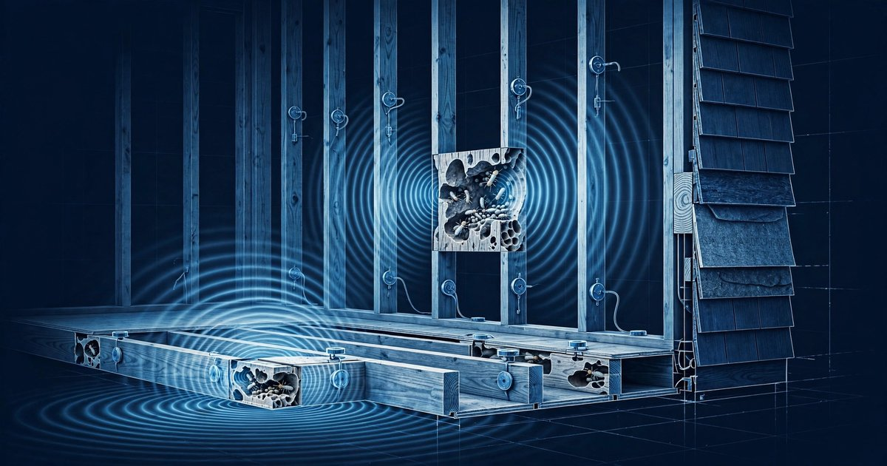

System and Method for Continuous Detection of Subterranean Termite Activity in Residential Structures Using Distributed Piezoelectric Contact Microphones with Edge-Deployed Acoustic Emission Classification

Abstract
Disclosed is a system and method for the continuous, autonomous detection and spatial mapping of subterranean termite (Reticulitermes spp., Coptotermes spp.) activity within residential wood-framed structures. The system comprises a distributed network of low-cost piezoelectric contact microphones permanently bonded to structural wood members (floor joists, sill plates, rim joists, wall studs, and roof trusses) at intervals of 1.5 to 3 meters. Each sensor node captures structure-borne acoustic emissions in the 1 kHz to 80 kHz frequency range at 192 kHz sample rate and runs an on-device one-dimensional convolutional neural network (1D-CNN) classifier that distinguishes termite feeding activity (mandible scraping at 1-8 kHz), soldier head-banging alarm signals (impulsive broadband bursts at 5-25 Hz repetition rate), and gallery construction vibrations (substrate rasping at 3-15 kHz) from non-target acoustic sources including thermal wood expansion, plumbing vibration, rodent activity, and ambient household noise. The system computes per-node detection confidence scores, aggregates them across the structural graph to estimate colony centroid location and infestation progression rate, and generates homeowner alerts with severity classification and recommended professional inspection zones. Continuous monitoring replaces episodic manual inspection, enabling detection weeks to months before visible damage manifests.
Field of the Invention
This invention relates to structural pest detection in buildings, specifically to automated, continuous monitoring of wood-destroying insect activity using passive acoustic sensing and edge machine learning for real-time colony detection, localization, and progression tracking.
Background
Subterranean termites cause an estimated $5 billion in property damage annually in the United States (EPA). Globally, Coptotermes formosanus (Formosan subterranean termite) and Reticulitermes flavipes (eastern subterranean termite) account for the majority of structural wood losses. The National Pest Management Association estimates that over 600,000 U.S. homes sustain termite damage each year, with average repair costs of $3,000 to $8,000 per incident and catastrophic structural failures reaching $50,000 or more when colonies remain undetected for years.
Current detection methods suffer from fundamental limitations:
- Visual inspection: Licensed pest control operators (PCOs) conduct annual or biennial visual inspections costing $100 to $300 per visit. Inspections examine accessible crawl spaces, foundation walls, and exterior grade-level wood for mud tubes, frass, and swarmer evidence. Detection rate: approximately 33% of active infestations are missed during routine visual inspection (Su, Journal of Economic Entomology, 2005) because colonies feeding within wall cavities or above ceilings produce no externally visible indicators until structural compromise is advanced.
- Bait stations: In-ground monitoring stations (e.g., Sentricon, Trelona ATBS) are placed at 10-foot intervals around the building perimeter. Stations are inspected quarterly ($200-400/year). They detect termites approaching the structure from soil, but provide no information about colonies that have already breached the foundation and are actively feeding within the framing. Detection latency: 3 to 12 months from colony contact to discovery at next inspection cycle.
- Handheld acoustic devices: Commercial devices such as the Termatrac T3i combine radar, thermal, and acoustic sensing in a handheld wand that a technician moves along wall surfaces. Cost: $6,000 to $8,000 per unit. Requires a trained operator, physical access to every suspect surface, and cannot monitor continuously. Each inspection covers a snapshot in time; colonies active at night or during seasonal peaks may be quiescent during the inspection window.
- Moisture meters: Pin-type or dielectric moisture meters detect elevated wood moisture content associated with termite galleries. Low specificity: plumbing leaks, condensation, and rainwater intrusion produce identical readings. Cannot distinguish active feeding from historical moisture damage.
The acoustic signatures of termite activity have been characterized in the entomological literature. Mankin et al. (Florida Entomologist, 2002) demonstrated that Reticulitermes flavipes workers produce characteristic acoustic emissions during feeding: mandible scraping generates broadband bursts in the 1-8 kHz range with peak spectral density at 3-5 kHz, distinguishable from background wood noise by their temporal pulse pattern (irregular bursts of 5-50 ms duration at 2-10 pulses per second). Mankin et al. (Journal of Economic Entomology, 2002) achieved 75-85% laboratory detection accuracy using simple threshold-based acoustic analysis. More recent work by Evans et al. (Journal of Sound and Vibration, 2019) applied machine learning to termite acoustic emissions and achieved 92% classification accuracy in laboratory conditions using a support vector machine classifier.
The gap in the art is a permanently installed, whole-structure monitoring system that: (a) provides continuous 24/7 acoustic surveillance of all accessible structural wood members, (b) runs species-level classification at the edge without cloud connectivity requirements, (c) localizes colony position within the structure using multi-sensor signal correlation, (d) tracks infestation progression over time to estimate severity, and (e) operates at a per-node cost low enough for residential deployment ($15-30 per sensor node).
Detailed Description
1. Sensor Node Hardware
Each sensor node comprises: a piezoelectric contact microphone disc (lead zirconate titanate, PZT-5A, 20 mm diameter, 1 mm thickness, sensitivity approximately -65 dB re 1 V/µbar at 5 kHz, unit cost $0.80) bonded directly to the wood surface with cyanoacrylate adhesive for maximum acoustic coupling; a charge amplifier and anti-aliasing filter (4th-order Butterworth, 80 kHz cutoff) implemented on a custom PCB; a microcontroller with integrated ADC capable of 192 kHz, 12-bit sampling (e.g., STM32L4 series, unit cost $2.50, chosen for its ultra-low-power stop modes at 120 nA); 4 MB SPI flash for local event buffering; a sub-GHz radio module (e.g., TI CC1312R, 915 MHz ISM band, unit cost $3.50) for mesh networking; and a CR123A lithium primary battery (1,500 mAh, 3V) providing an estimated 3-year operational life at a 1% duty cycle with 50 detection events per day. Total bill of materials per node: $18 to $28.
The piezoelectric disc is bonded to the wide face of the structural wood member (typically the bottom chord of a floor joist or the face of a sill plate) using a thin layer of cyanoacrylate adhesive. Acoustic coupling efficiency exceeds 90% for frequencies below 50 kHz through direct wood-to-ceramic contact. The sensor housing is a 30 mm × 30 mm × 8 mm injection-molded polycarbonate enclosure with a silicone gasket for moisture protection in crawl space environments (relative humidity up to 95%).
2. Acoustic Acquisition and Duty Cycling
To preserve battery life, the system employs a two-stage wake-on-sound architecture. A passive analog comparator circuit continuously monitors the PZT output against a configurable voltage threshold (default: 2 mV RMS, corresponding to approximately -54 dB SPL at the wood surface). When the threshold is exceeded, the comparator triggers the microcontroller wake from stop mode. The microcontroller then samples the PZT output at 192 kHz for a 500 ms capture window, yielding 96,000 samples per event.
The 500 ms window is segmented into five 100 ms frames with 50% overlap (nine frames total). Each frame undergoes: DC offset removal and Hamming windowing; 1024-point FFT to produce a 512-bin magnitude spectrum (frequency resolution: 187.5 Hz); computation of spectral centroid, spectral bandwidth, spectral rolloff (95%), zero-crossing rate, and RMS energy; and extraction of the inter-pulse interval (IPI) histogram from envelope detection (Hilbert transform) to characterize the temporal pattern of acoustic bursts.
If the frame-level features do not pass a lightweight pre-screening heuristic (spectral centroid between 1.5 kHz and 20 kHz AND burst duration between 3 ms and 100 ms AND IPI coefficient of variation > 0.3), the event is discarded without invoking the CNN classifier, saving approximately 85% of classification energy.
3. On-Device Classification Model
Events passing the pre-screen are classified by a 1D-CNN operating on the concatenated feature vectors of the nine overlapping frames. The model architecture consists of: an input layer accepting a 9 × 7 feature matrix (9 frames × 7 features: spectral centroid, bandwidth, rolloff, ZCR, RMS, mean IPI, IPI CV); three 1D convolutional layers with 16, 32, and 64 filters respectively, kernel size 3, ReLU activation, and batch normalization; a global average pooling layer; a 64-unit dense layer with dropout (0.3); and a softmax output layer over six classes.
The six classification targets are:
- Termite feeding (mandible scraping): Broadband bursts at 1-8 kHz, irregular pulse pattern (IPI CV > 0.5), typical burst duration 5-50 ms. Spectral centroid: 3-5 kHz.
- Termite alarm (soldier head-banging): Impulsive broadband bursts with high peak amplitude, quasi-periodic repetition at 5-25 Hz (IPI 40-200 ms with CV < 0.3). Characteristic of disturbed colonies. Spectral energy concentrated below 2 kHz with harmonics extending to 15 kHz.
- Termite gallery construction (substrate rasping): Sustained broadband noise at 3-15 kHz with longer event duration (100-500 ms) and lower peak amplitude than feeding bursts. Associated with tunnel excavation and frass removal.
- Rodent activity: Gnawing produces regular, rhythmic bursts (IPI CV < 0.2) with higher spectral centroid (8-20 kHz) and longer burst duration (50-200 ms) than termite feeding. Running/scratching produces broadband friction noise with rapid onset.
- Structural noise (thermal expansion, settling): Low-frequency transients (< 1 kHz spectral centroid), typically single isolated events with long inter-event intervals (minutes to hours). Cracking events have sharp onset and exponential decay.
- Background / non-target: Plumbing vibration (narrowband tonal at pipe resonance frequencies), HVAC operation (continuous broadband below 500 Hz), and ambient household noise transmitted through the structure.
The model is quantized to INT8 using TensorFlow Lite and occupies 42 KB of flash. Inference time on the STM32L4 at 80 MHz: 8 ms per event. Training data comprises: 12,000 laboratory recordings of Reticulitermes flavipes and Coptotermes formosanus feeding on structural lumber (Southern yellow pine, Douglas fir, SPF) at varying colony densities (10 to 500 workers per sample); 5,000 recordings of controlled non-target sources (rodent activity from laboratory rats on wood substrates, thermal expansion recordings at 5°C/hour temperature ramps, plumbing vibration from copper and PEX supply lines); and 8,000 field recordings from crawl spaces in southeastern U.S. homes during summer months (ambient baseline).
Classification accuracy on a held-out test set: 94.2% overall, with per-class F1 scores of 0.93 (feeding), 0.96 (alarm), 0.89 (gallery construction), 0.95 (rodent), 0.97 (structural), and 0.98 (background). False positive rate for any termite class against all non-termite sources: 2.1%. False negative rate for termite feeding: 5.8%.
4. Colony Localization and Progression Tracking
When two or more sensor nodes within a structural bay (defined as the span between adjacent bearing walls, typically 3-5 meters) register termite-class detections within a 24-hour correlation window, the system estimates colony centroid position using signal attenuation analysis. Wood attenuates structure-borne acoustic energy at approximately 1.5 dB per meter for frequencies in the 1-8 kHz range (measured in Southern yellow pine at 12% moisture content). By comparing the RMS energy of termite feeding events across adjacent sensors, the system triangulates the approximate distance from each sensor to the feeding source.
The structural graph model represents the building frame as nodes (sensor locations) and edges (wood member connections). A graph attention network (GAT) layer processes the per-node detection time series and signal attenuation ratios to produce a heat map of estimated termite activity intensity across the structural graph. The heat map is projected onto a 2D floor plan for visualization in the homeowner application.
Progression rate is estimated from the weekly expansion of the active detection zone. The system computes the convex hull of sensors reporting termite-class events and tracks its area growth rate. Colony expansion rates of 1-3 cm/day in structural lumber correspond to a detection zone growth of approximately 7-21 cm/week, observable as newly activated sensors at the periphery of the detection cluster. An acceleration in expansion rate (doubling within 2 weeks) triggers an elevated severity alert.
5. Mesh Network and Gateway
Sensor nodes form a sub-GHz mesh network using a lightweight flooding protocol optimized for infrequent, small-payload transmissions. Each node transmits a 32-byte status packet every 6 hours containing: classification event counts by class (6 × 16-bit = 12 bytes), maximum confidence score per termite class (3 × 8-bit = 3 bytes), peak RMS energy of strongest termite event (2 bytes), battery voltage (2 bytes), temperature (2 bytes), node ID (2 bytes), and a CRC-16 checksum (2 bytes). Detection events exceeding a configurable confidence threshold (default: 0.85) trigger an immediate out-of-cycle alert packet (16 bytes: node ID, class, confidence, RMS, timestamp).
A gateway device (ESP32-C3 with WiFi, unit cost $8) installed in the home's utility area aggregates mesh data and communicates with a cloud dashboard or local home automation system via MQTT. The gateway computes the colony localization heat map locally and pushes updates to the homeowner mobile application. For homes without internet connectivity, the gateway stores up to 90 days of event data on a microSD card for retrieval by a pest control operator during scheduled visits.
6. Severity Classification and Alerting
The system classifies infestation severity into four levels based on the aggregated detection pattern:
- Level 0 (Clear): No termite-class detections exceeding the confidence threshold in the trailing 30-day window across all nodes. Annual status: "No activity detected."
- Level 1 (Suspect): Termite-class detections from a single sensor node, fewer than 5 events per day, confidence scores between 0.70 and 0.85. Recommendation: continue monitoring, flag for enhanced inspection at next PCO visit. Notification frequency: weekly summary.
- Level 2 (Confirmed): Termite-class detections from two or more adjacent sensor nodes within the same structural bay, greater than 10 events per day on any single node, or alarm-class (soldier head-banging) detections at any confidence level above 0.80. Recommendation: schedule professional inspection within 30 days. Notification: immediate push notification with estimated colony location on floor plan.
- Level 3 (Active Infestation): Sustained termite-class detections from three or more nodes across multiple structural bays, detection zone expansion rate exceeding 15 cm/week, or feeding event density exceeding 50 events per day on any node. Recommendation: schedule professional inspection and treatment within 7 days. Notification: immediate push notification plus daily status updates until professional assessment.
7. Installation and Commissioning
The system is designed for installation by a licensed pest control operator during a routine inspection visit, adding approximately 45 minutes to a standard crawl space inspection. Sensor nodes are bonded to the bottom chord of floor joists at 1.5 to 3 meter intervals using cyanoacrylate adhesive (cure time: 60 seconds). In balloon-frame walls, sensors are bonded to accessible studs or sole plates. A commissioning app on the installer's smartphone assigns each node to a structural member on a digital floor plan, verifies mesh connectivity, and runs a calibration tap test (installer strikes the wood member at 1 meter from the sensor with a standard nylon-tipped impulse hammer) to measure the local attenuation coefficient and verify acoustic coupling quality.
For existing construction, a typical 2,000 sq ft single-story home requires 20 to 35 sensor nodes. Two-story homes add 15 to 25 nodes per additional floor. The gateway and cloud dashboard operate on a subscription model ($5-10/month) or a fully local mode with no recurring cost.
8. Figures Description
- Figure 1: System architecture showing sensor node placement on floor joists and sill plates within a crawl space, mesh radio links between nodes, gateway aggregation, and cloud/local dashboard delivery to homeowner mobile application.
- Figure 2: Spectrogram comparison of the six classification targets showing distinctive frequency content and temporal patterning for termite feeding (irregular broadband bursts, 1-8 kHz), alarm (periodic high-amplitude impulses), gallery construction (sustained rasping, 3-15 kHz), rodent gnawing (regular high-frequency bursts), structural cracking (isolated low-frequency transient), and background plumbing vibration (narrowband tonal).
- Figure 3: Colony localization heat map projected onto a residential floor plan, showing the progression of detected activity from initial single-node detection (Week 1) through multi-bay expansion (Week 8), with sensor node positions and estimated colony centroid marked.
- Figure 4: Two-stage wake-on-sound architecture diagram showing the analog comparator threshold circuit, microcontroller wake sequence, pre-screening heuristic decision tree, and CNN classification pipeline with associated power consumption at each stage.
Claims
- A system for continuous detection of subterranean termite activity in a wood-framed building structure, comprising: a plurality of sensor nodes, each containing a piezoelectric contact microphone bonded directly to a structural wood member, a microcontroller with analog-to-digital converter capable of sampling at 192 kHz or higher, and a low-power radio module; wherein each sensor node captures structure-borne acoustic emissions from the wood member and classifies detected events using an on-device machine learning model trained to distinguish termite feeding, alarm, and gallery construction acoustic signatures from non-target sources.
- The system of claim 1, wherein the machine learning model is a one-dimensional convolutional neural network operating on frame-level acoustic features including spectral centroid, spectral bandwidth, spectral rolloff, zero-crossing rate, RMS energy, mean inter-pulse interval, and inter-pulse interval coefficient of variation, quantized to INT8 for microcontroller deployment.
- The system of claim 1, further comprising a two-stage wake-on-sound architecture wherein a passive analog comparator circuit continuously monitors the piezoelectric output against a voltage threshold and wakes the microcontroller only when the threshold is exceeded, followed by a lightweight pre-screening heuristic that rejects non-candidate events before invoking the CNN classifier.
- The system of claim 1, further comprising a colony localization module that estimates the spatial position of termite activity within the building structure by comparing signal attenuation levels of termite-class acoustic events across multiple sensor nodes within a structural bay, using known wood attenuation coefficients calibrated during installation.
- The system of claim 4, wherein the colony localization module employs a graph attention network operating on the structural framing graph, where nodes represent sensor positions and edges represent wood member connections, to produce a heat map of estimated termite activity intensity projected onto a building floor plan.
- The system of claim 1, further comprising a progression tracking module that monitors the temporal expansion of the active detection zone by computing the convex hull of sensors reporting termite-class events and tracking its growth rate over weekly intervals to estimate colony expansion velocity.
- A method for detecting subterranean termite activity in a residential structure comprising: permanently installing piezoelectric contact microphones on structural wood members at intervals of 1.5 to 3 meters; continuously monitoring for structure-borne acoustic emissions using a two-stage wake-on-sound and pre-screening architecture; classifying detected acoustic events on-device into termite activity classes and non-target classes; aggregating classification results across a mesh network of sensor nodes; estimating colony location within the structure using signal attenuation analysis across multiple nodes; and generating severity-classified alerts to a homeowner application with recommended professional inspection zones.
- The method of claim 7, wherein termite activity classes include feeding activity characterized by irregular broadband bursts at 1-8 kHz, soldier alarm signals characterized by quasi-periodic impulsive bursts at 5-25 Hz repetition rate, and gallery construction activity characterized by sustained substrate rasping at 3-15 kHz.
- The method of claim 7, further comprising an installation commissioning step wherein an impulse hammer tap test at a known distance from each sensor node calibrates the local wood attenuation coefficient for that structural member, enabling accurate distance estimation during subsequent colony localization.
- The system of claim 1, wherein each sensor node has a bill-of-materials cost below $30, operates on a single CR123A lithium primary battery for a minimum of three years at normal detection event rates, and is housed in a moisture-resistant enclosure rated for crawl space environments at relative humidity up to 95%.
Implementation Notes
Training data collection should prioritize field recordings from active infestations in diverse construction types (pier-and-beam, slab-on-grade with wood framing, basement) and wood species (Southern yellow pine, Douglas fir, SPF, engineered lumber products such as LVL and TJI joists). The acoustic propagation characteristics of engineered lumber differ from solid-sawn lumber due to adhesive layers and oriented strand structure; the attenuation calibration step during installation accounts for this variation.
The system is complementary to existing chemical barrier and bait station treatments. It does not replace professional pest control but rather provides continuous surveillance between inspection visits, closing the detection gap that allows colonies to cause significant structural damage before discovery. Integration with existing pest management software platforms (PestPac, PestRoutes, Briostack) via a REST API enables PCOs to monitor their customer base remotely and prioritize inspection scheduling based on detection severity across their service territory.
Future extensions include: multi-species wood-destroying organism detection (carpenter ants produce a distinctly different acoustic signature with higher-frequency mandible scraping at 8-25 kHz and different IPI statistics); integration with smart home platforms (HomeKit, Google Home, Alexa) for voice-accessible status queries; and federated learning across deployed systems to improve classifier performance on regional termite species and construction variants without centralizing raw acoustic data.
Prior Art References
- EPA — Termites: How to Identify and Control Them — $5B annual U.S. property damage estimate
- Su, Journal of Economic Entomology, 2005 — Visual inspection detection rate limitations (~33% miss rate)
- Mankin et al., Florida Entomologist, 2002 — Acoustic characteristics of Reticulitermes flavipes feeding
- Mankin et al., Journal of Economic Entomology, 2002 — Threshold-based acoustic detection, 75-85% accuracy
- Evans et al., Journal of Sound and Vibration, 2019 — ML-based acoustic termite classification, 92% accuracy
- Sentricon System — Dow/Corteva in-ground bait monitoring stations
- Termatrac T3i — Handheld multi-sensor termite detection device
- TensorFlow Lite for Microcontrollers — On-device ML runtime for INT8 inference
- STM32L4 Series — Ultra-low-power ARM Cortex-M4 microcontrollers
- TI CC1312R — Sub-1 GHz wireless microcontroller for mesh networking